How do you teach a car to race?
In reinforcement learning, a program learns by trying actions and seeing what follows. In Trackmania, the program is the driver and the game is its environment. At each decision it receives an observation, chooses steering and pedal inputs and gets a new observation together with a numerical reward.
The reward describes what I want it to do: make progress, finish and do it quickly. I do not label every corner with the correct steering angle. The network has to discover which sequences of actions earn a good result. Braking before a corner can be the right decision even when accelerating gives more progress in the next instant. That is why the learning target includes future rewards, usually discounted so that more distant outcomes count less.

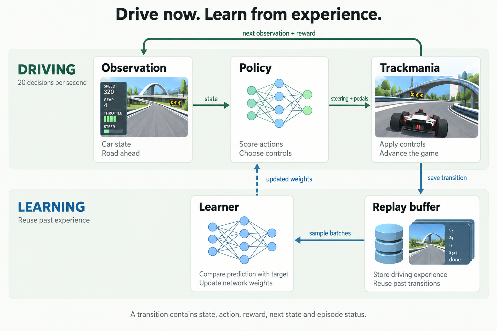
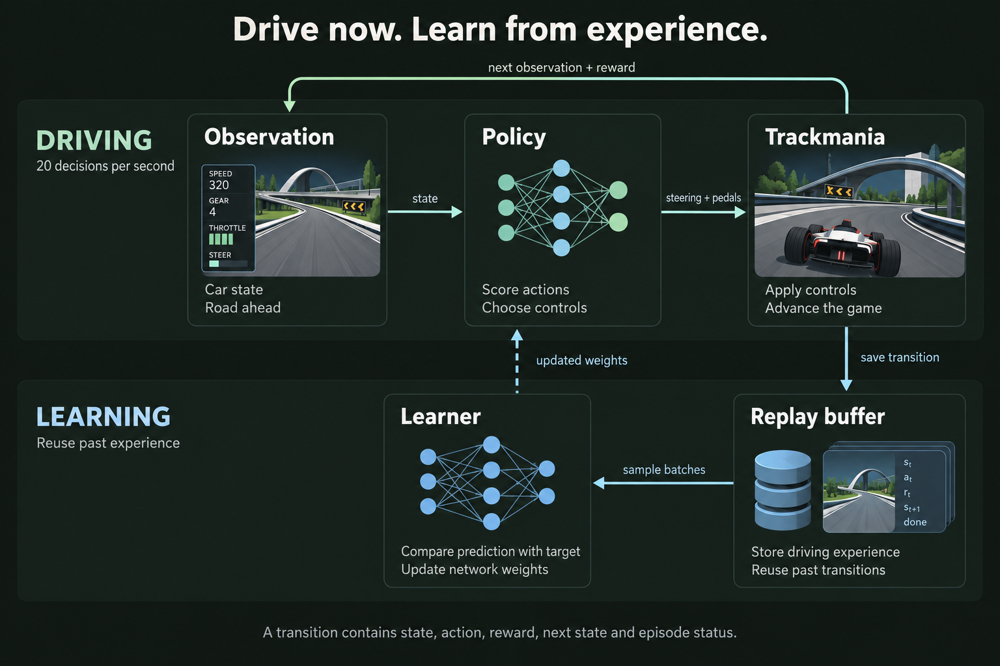
For the geometry-based model in this article, an observation describes the car's motion and the shape of the road ahead. The driver makes 20 decisions per second. I save each transition - what it saw, what it did, the reward and what happened next - in a replay buffer. Training samples that history repeatedly, so an expensive second of gameplay can contribute to more than one update.
Early in training, the driver needs exploration: trying controls it would not yet choose as its best option. Later, I evaluate it without that extra randomness. A policy is simply the rule that turns an observation into an action. Learning changes that rule. The rest of this article is about how I built one that could finish quickly and reliably and how often an apparently promising change failed that test.
Starting with TMRL
The earliest commit in this part of the repository is dated July 24, 2023. It updates the fork to a newer version of TMRL. At that point I was modifying an existing racing framework, trying different inputs and networks and fixing the pieces between the game and training.
TMRL provided the starting point: a way to run reinforcement learning against a real-time game. The agent observes the car and road, chooses steering and pedal inputs, then learns from what happens next. The awkward part is that the game keeps moving while the rest of the system does its work.
The early commits are full of practical changes. In August I fixed a replay-buffer problem that was saving six elements where forty were expected. There were changes to the telemetry interface, Q-functions and model outputs. TQC appeared in the experiments in August and September. By October I had added an API-only model, with a commit message that states the reason plainly: increase training speed.
This was the beginning of a question that kept returning: how much of the driving problem should the network infer from an image and how much should I describe explicitly? Telemetry and track geometry are useful shortcuts. They expose speed, orientation and the road ahead in a form that a relatively small model can process. They also make the setup dependent on having those inputs for the map.
At the end of 2023 I explored n-step returns, image-free training, an IMPALA experiment environment and R2D2-style recurrent learning. In January 2024, another commit replaced an LSTM with a GRU and removed an attention layer. Some of these experiments helped. Others disappeared as the code changed. The original TMRL authors built the foundation. I continued from there with the experiments, debugging and eventual rewrite into TrackmaniaRL.
- TMRL experimentsTelemetry, TQC, API-only inputs, n-step and recurrent models.
- Back to trainingIQN tuning, experiment configuration, reward and replay work.
- A reusable runtimeFrozen evaluation, demonstrations, actor/learner separation. First TrackmaniaRL release.
- Consistency and new inputsGraph-based driving, recovery experiments, the sub-37 confirmation and camera-based work.
Why I settled on IQN
A driver needs some way to decide whether steering left now is better than holding its line. A value-based method learns a score for each action: the reward it expects to collect from that decision onward. An actor-critic method also learns a separate policy, called the actor, which proposes controls, while a critic estimates how good they are.
IQN, or Implicit Quantile Networks, learns a distribution of returns for each action. Instead of only predicting an average, it can estimate different quantiles: lower, middle and upper parts of the return distribution. The network receives a sampled quantile level along with the state representation. This gives it a richer learning target than a single-value estimate. My controller averages its evaluation quantiles to score actions. Using IQN does not, by itself, make the driver risk-averse.

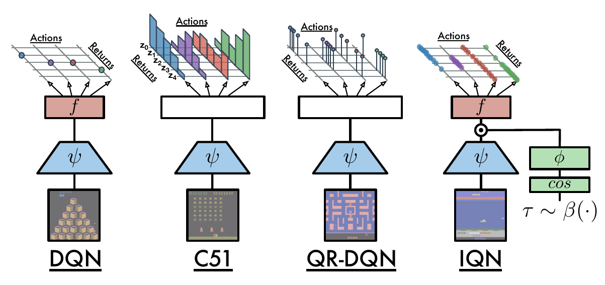

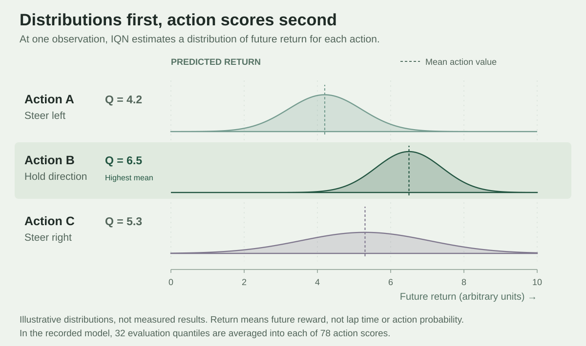
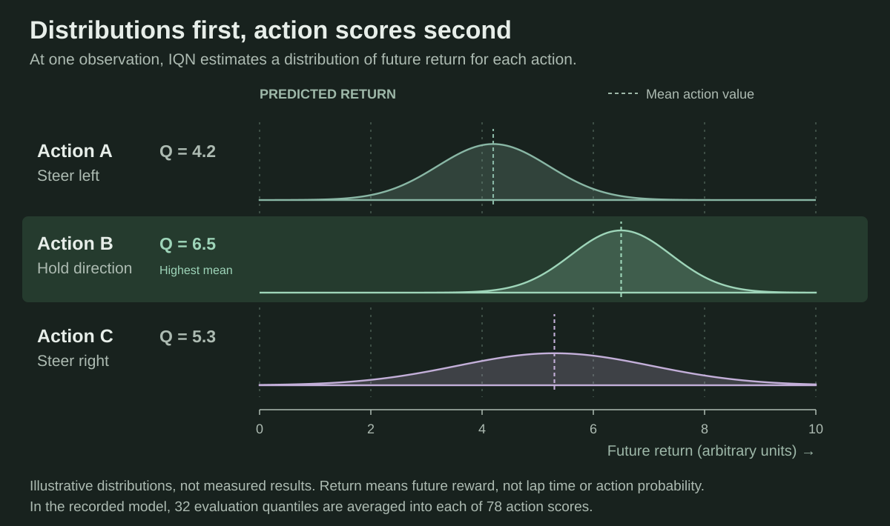
In this project I use 78 combinations of steering and pedals. IQN can score all of them in one batched network evaluation. That made the controls easy to inspect and later made the reference-action filter straightforward: restrict the available choices, then take the highest score. There is no separate learned continuous actor to optimize. Discretization gives up arbitrary control precision, but this action set was enough for the confirmed result.
| Method | What it learns | What that means here |
|---|---|---|
| DQN | One expected return per discrete action. | A simpler value head. It does not describe the shape of the return distribution. |
| IQN | A quantile function for each discrete action. | Ranks the full action set and works directly with a filter on those choices. |
| SAC Soft Actor-Critic | A stochastic actor and critics, with an entropy term that encourages exploration. | The classic formulation selects continuous controls. It offers finer action precision, with a separate policy objective to train. |
| TQC Truncated Quantile Critics | A continuous actor and several distributional critics. Their largest target quantiles are discarded. | Addresses overoptimistic values. It is also distributional, so that feature is not unique to IQN. |
| PPO Proximal Policy Optimization | A policy updated on recently collected rollouts, with an objective that limits large policy changes. | Reuses a fresh batch for several updates, rather than training on a long-lived off-policy replay buffer. |
SAC and TQC also reuse replay data. That advantage over a fresh-rollout approach matters when collecting experience means waiting for an actual game, but it does not distinguish IQN from them. Discrete versions of SAC exist too. The comparison above describes the usual continuous-control formulation.

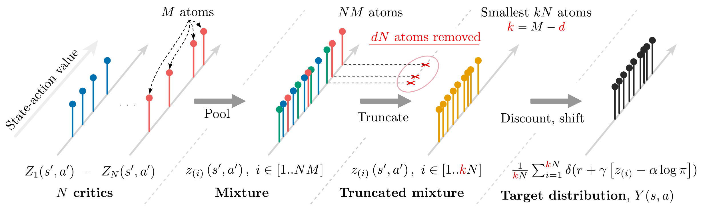
IQN stayed because it fit the discrete controls, gave me action values I could inspect and became the basis of my best confirmed controller. TQC was part of the earlier experiments, but I changed observations, rewards and runtime along the way. I do not have an equal-budget comparison that would establish IQN as inherently better than SAC or TQC. I do have a working reason to keep it and the library leaves those alternatives available.
Returning to the experiments in 2026
The next substantial work in the surviving history starts in February 2026: updating the fork, changing dependencies, trying residual actor-critic models and documenting a two-actor setup. By April and May, I was spending more time making experiments easier to run. Configuration and component registries made it easier to change an algorithm without maintaining a separate training program for each attempt.
The experiment logs fill in what the commits leave out. In May and June I tried faster exploration decay, larger batches, lower learning rates, longer learning targets, gradient clipping and different target-network update schedules. The logs include hundreds of training attempts, evaluations and restarts.
The May 13 baseline already combined a graph track encoder, IQN and a SimbaV2-style backbone without recurrence. Late May and early June brought changes to road sampling, lookahead and exploration. A Conv1D recovery baseline appeared on June 7. The final model was taking shape months before the package release.
It is easy to draw the wrong conclusion from a dashboard. A run marked “crashed” may have been interrupted. It does not mean the car never finished. A summary value may describe the last episode rather than the whole run. Some early experiment reports had to be corrected after checking the full history: sampled charts had missed successful finishes.
I also tried adding Munchausen reward terms and penalties intended to keep IQN’s quantiles ordered. Looser settings could inflate Q-values. Stronger regularization could make the values look much better while the car still made little progress. Removing complications and checking actual driving was often more useful than finding another way to make a loss curve look tidy.
I used the experiment dates to reconstruct what I tried and the Git history to follow changes to the implementation. Some reports were committed weeks after the experiments themselves.
What the training curves missed
One of the clearest examples came in July. In one set of experiment notes, the training finish rate improved from 32% to 82% and then 84%. Frozen evaluation moved in the opposite direction: nine finishes in ten attempts, then eight, then one.
There was a concrete reason to distrust the comparison. During training, an actor could load new weights roughly every five seconds. A completed lap could therefore contain decisions from several versions of the policy. Frozen evaluation tested a single version. Meanwhile, rollout data could sit in a queue for about 100-115 seconds before being learned from.
The fixes were mostly about the runtime: keep one policy throughout an episode, drain the rollout backlog, preserve more replay history and save the checkpoint that actually performed best in evaluation. The notes also suspected that replay had lost useful early failure states. The changing policy versions and delayed data were visible in the logs. Losing useful failure states was a possible explanation too, but harder to establish.
Some failed runs were implementation bugs
Later, an exploration bug provided a particularly expensive example. Exploration was nominally at its maximum, but 85% of random actions kept the pedal mode preferred by the untrained network. In that run it preferred the brake. The first 414 episodes barely moved. Calling this evidence against IQN or the encoder would have missed the point: the exploration code was not doing what the configuration suggested.
Another investigation exposed a replay bottleneck. The learner was spending much of its time constructing replay samples. With a 20-step return, a batch could involve thousands of Python transition objects. The recorded replay benchmark dropped from 106.3 to 22.2 milliseconds per sample operation after a columnar fast path was introduced. The driver still needed to learn, but the learner could now keep up with the training schedule.
These problems changed what I wanted from the project. Swapping neural networks was useful, but I also needed to know that observations, actions, episode boundaries and updates meant the same thing throughout the system.
Choosing the reward
What I started with in TMRL
TMRL uses a recorded trajectory as a guide. It finds the nearby reference point that best matches the car’s position and rewards forward movement through that list: . Its game interface adds a configurable finish bonus and a constant penalty at each step. If the car stops making progress for too long, the episode ends. That is a useful way to teach a car to reach the finish without manually prescribing its steering.
It also gives the agent reasons to drive faster: fewer step penalties and earlier rewards under discounting. But the progress term measures reference indices, so its scale depends on how the trajectory was sampled. The finish bonus does not distinguish two successful lap times. For my goal, getting the average below 37 seconds, I needed to check whether the complete reward actually preferred the faster driving I wanted. The original progress calculation remains a good starting point, rather than a lap-time objective I could copy unchanged.
What I tried
The early IQN recipe combined progress with velocity projected along the road, a small time cost of 0.02 reward units per second and a finish bonus of 10. It produced a recorded 36.30-second training lap. That showed that the car could find a fast line, but a best lap was not enough to establish consistent sub-37 driving.
I also explored a completion-first branch: 40 units for a full lap’s progress, a finish bonus of 60, a time cost of 0.1 per second and no terminal failure penalty. The retained-speed follow-up still had evaluation medians around 80-99 seconds and often failed to finish. Reward was not the only change in those experiments, but the objective had a clear weakness. Moving slowly could keep earning progress, while an aggressive failed lap could retain a substantial positive return.
Projected velocity was another trap. It rewards motion along the road instead of raw speed in any direction, which is useful. Yet velocity integrated over time is close to distance travelled. A longer, slower path can accumulate more of it. Increasing the time cost to 1 unit per second and using a finish bonus of 70 improved the objective, but did not fully remove that problem.
One pair of training laps made it obvious: 37.18 seconds earned 346.21 reward units, while 39.39 seconds earned 347.23. Both had 17 contact flags. The slower lap collected 119.16 units of projected-velocity reward instead of 115.93, enough to outweigh its extra time. A higher return still did not always mean a faster finish.
Why the finish-time correction stayed
Before starting another training run, I re-scored the same 200 completed laps with several alternatives. This was an offline check of the objective, not a test of how a newly trained car would drive.
| Reward variant | Pairwise agreement | Decision |
|---|---|---|
| Existing reward | 64.4% | Too many faster laps ranked below slower ones. |
| Double the contact penalty | 66.8% | Little improvement. Contact flags measure flagged control steps, so they are not a count of separate crashes. |
| Remove projected velocity | 87.5% | A better time ranking, but it removed roughly 116 reward units per completed lap and would substantially change the value scale of the trained network. |
| Keep the dense reward and add a signed finish-time term | 84.4% | A much better time ranking with a smaller change to the existing value targets. This was the variant taken into online fine-tuning. |
The added term was . It gave the two example laps adjustments of -4.36 and -8.78, restoring their order. Unlike a bonus paid only below a threshold, it still gives the agent credit for improving from 39 to 38 seconds. The 35-second reference sets the offset. It is not the benchmark’s 37-second acceptance threshold.
I then fine-tuned the existing model with that term and fresh replay. Its recorded evaluations included a five-lap mean of 36.962 seconds. Since initialization and replay also changed, this supports keeping the revised training setup rather than proving an isolated effect of the reward. The later 30-attempt confirmation used the same reward with the context, recovery and action-support changes described below.
The reward in the confirmed controller
For an ordinary decision, the active terms are:
is newly accepted progress as a fraction of the reference path’s physical length. A valid finish tops up any remaining progress reward. is signed forward velocity in metres per second, clipped to ±100. comes from the game’s race clock, capped at one second per transition. At the normal 20 Hz rate, the time cost is -0.05 per decision. is the final race time in seconds. The indicator c is 1 for a flagged contact step and 0 otherwise. Each flagged step costs 0.15, with no cooldown.
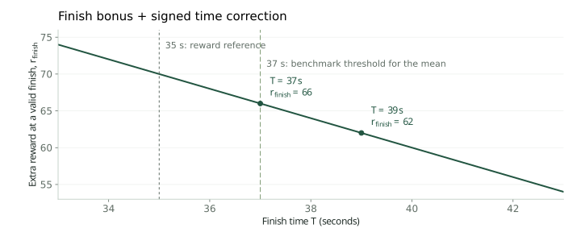
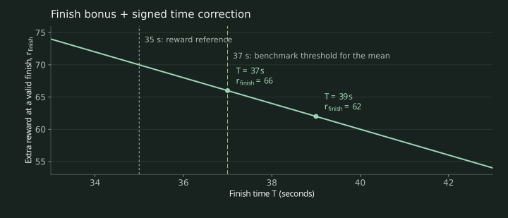
A finish adds the base bonus and the time correction, whose negative part is capped at the size of that bonus. A natural failure, such as going too far off the reference path, getting stuck or exceeding the time limit, adds -2 instead. The learner discounts future rewards with . I still select checkpoints by actual finish counts and lap times, because discounted reward is a training signal rather than the benchmark itself.
The library also implements potential-based progress shaping, demonstration-relative pace shaping, a quadratic speed bonus, a below-target finish bonus and a steering-change penalty. Their scales are zero in this controller. Having them available in code is not evidence that they beat the selected reward. I kept the signed finish-time correction because the offline check addressed a measured ranking problem and the resulting training setup produced useful evaluation results. The saved benchmark configuration records the exact settings.
Getting the average below 37 seconds
By September the car could already produce quick laps on the test track. My goal was an average below 37 seconds across a fresh set of 30 attempts. An occasional wall contact, long slowdown or failed recovery could still ruin that average.
The finish-time reward gave me a better starting point. At roughly 297,000 additional transitions, one five-lap evaluation averaged 36.962 seconds. Across the fine-tuning run’s ten evaluation batches, 47 of 50 attempts finished. The car was close, but the occasional slow lap still mattered.
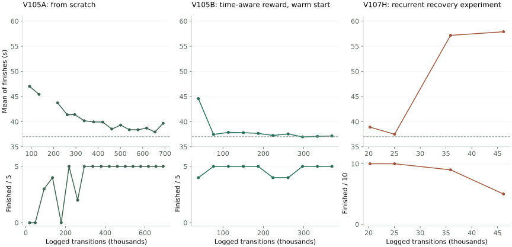
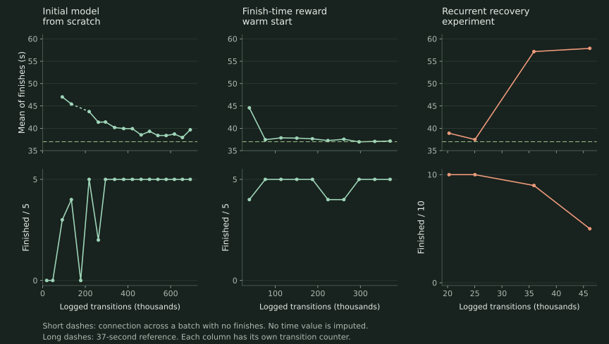
What helped with the slow laps
A context adapter added road-relative information to an already trained base: position across the road, edge clearance, sideslip and a speed-dependent view of upcoming curvature. In the recorded comparison with the base model, both configurations finished all 30 attempts. The mean fell from 38.544 to 37.842 seconds and the 95th-percentile time fell from 46.830 to 42.090 seconds. The typical lap changed much less. The useful difference was in the slow laps.
Several attempts to remove the remaining slowdowns were less successful. Making action changes harder with a Q-value margin delayed corrective steering. Extending the learning target from five to twenty decisions produced a 36.28-second lap - but the average in that same ten-lap batch was 42.04 seconds. A recurrent recovery adapter could disturb the ordinary racing line as well as help with an incident. Continued training sometimes made the controller worse.
| What changed | What happened | What I kept from it |
|---|---|---|
| Bounded context adapter | 30/30 finishes. Mean 37.842 s versus 38.544 s for the recorded baseline. | Useful road-relative features could reduce the slow tail. |
| Q-switch margin 0.020 / 0.005 | 9/10 at 38.937 s. 10/10 at 39.100 s. | Holding an action longer could delay a needed correction. |
| Longer n-step target | Best lap 36.28 s. The same batch averaged 42.04 s. | The fastest single lap was a poor checkpoint-selection rule. |
| GRU recovery adaptation | From 10/10 at 38.902 s to 5/10 at 57.878 s among finishes. | An always-active correction could damage a good base policy. |
| Incident-gated recovery | 29/30. Mean of finishes 38.782 s. | Restricting corrections was safer, but still missed the target. |
| State-conditioned action support | Fresh 30/30. Mean 36.977 s. | A small, explicit restriction helped the already-fast policy make fewer costly choices. |
Collecting the comparison also exposed a setup problem: the game initially remained on its replay screen. I kept those timeouts in the report and collected the valid comparison after fixing the setup.
The change that passed confirmation
The configuration that finally passed kept the incident-gated network unchanged. It added neighbors, a filter built from complete episodes already in the checkpoint's replay. On the difficult part of the track, it looked for similar states and limited the network to actions found in that neighborhood. The network still chose the highest-scoring action from that set.
This differed from forcing a recorded input at a fixed percentage of the track. Similarity included the car's motion and road position, so the restriction depended on the situation. If the car was too slow or too far from the reference states, the filter fell back to the ordinary policy. The references were fixed before the benchmark. The benchmark laps were not added to them.
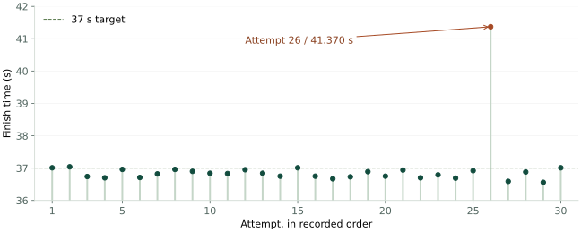
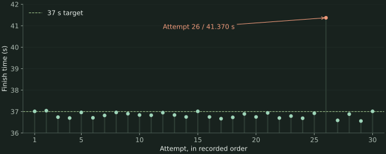
All 30 times and telemetry skips
| Attempt | Time (s) | Skipped frames |
|---|---|---|
| 1 | 37.010 | 18 |
| 2 | 37.040 | 8 |
| 3 | 36.740 | 5 |
| 4 | 36.700 | 6 |
| 5 | 36.960 | 6 |
| 6 | 36.710 | 4 |
| 7 | 36.820 | 5 |
| 8 | 36.960 | 16 |
| 9 | 36.900 | 19 |
| 10 | 36.840 | 6 |
| 11 | 36.830 | 8 |
| 12 | 36.950 | 10 |
| 13 | 36.840 | 2 |
| 14 | 36.750 | 5 |
| 15 | 37.010 | 9 |
| 16 | 36.750 | 18 |
| 17 | 36.670 | 9 |
| 18 | 36.730 | 12 |
| 19 | 36.890 | 2 |
| 20 | 36.750 | 2 |
| 21 | 36.940 | 4 |
| 22 | 36.700 | 3 |
| 23 | 36.790 | 3 |
| 24 | 36.690 | 9 |
| 25 | 36.920 | 6 |
| 26 | 41.370 | 232 |
| 27 | 36.590 | 10 |
| 28 | 36.880 | 8 |
| 29 | 36.560 | 5 |
| 30 | 37.010 | 8 |
This was my strongest confirmed configuration on the test track: all 30 attempts finished and their mean was below 37 seconds. The slowest attempt still took 41.370 seconds. The series also recorded 458 skipped telemetry frames. Passing one series with a 23 ms margin gives me a useful result to build on, though future batches can still exceed the target.
The model I ended up using
The driving system in the film has a geometry-based graph encoder, a branch for the car's motion, small context and recovery adapters, a SimbaV2-style backbone and a dueling IQN head. It has about 1.64 million parameters. There is no GRU in this configuration. A GRU, or gated recurrent unit, carries memory between decisions. I removed that branch after the recovery experiments became less consistent.
What SimbaV2 contributes
SimbaV2 is a way to build the network, not a competing action-selection algorithm. Its key idea here is to keep feature vectors and weight vectors at a controlled length. A residual block learns how much of a transformed representation to mix with its input, then normalizes the result again. The extra constant input preserves magnitude information that would otherwise be lost when a vector is normalized.

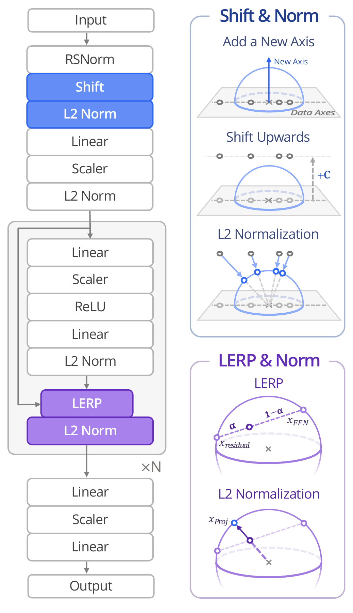
The paper’s complete method also includes input standardization, a distributional critic and reward scaling and was evaluated with SAC. My model adapts the backbone ideas, including projecting weights back to unit length after updates and connects them to its own geometry encoder and IQN head. The figure explains the source of those ideas. The diagram below shows the actual racing model.

Every input, in order
The observation is a dictionary of four tensors, rather than one flattened vector. Together they contain 361 game-derived values. The lists below use the implementation’s zero-based indices and show the exact layout used by the recorded controller.
Road geometry - all 44 stations and 264 coordinates
Each station has left, center and right positions expressed in the car’s horizontal frame. In each coordinate pair, x is lateral and z is forward. There is no height coordinate in this tensor. The nominal offsets run from 2.5 to 110 metres in 2.5-metre intervals, measured from the nearest reference station along the centerline. Each target selects the next available geometry sample. These are path offsets, not straight-line distances from the car. Near an open finish, a virtual straight extension supplies the remaining lookahead. The GNN links adjacent stations with fixed edges.
The stored tensor has shape (3, 88): left pairs first, then center pairs, then right pairs. The GNN rearranges it into (44, 6), with the six coordinates in the order shown above. Both road encoders divide coordinates in metres by 50. The Conv1D branch also appends a deterministic position channel, station index / 43. It is computed inside the encoder, rather than supplied by telemetry.
| Station | Ahead | Left x and z | Center x and z | Right x and z |
|---|---|---|---|---|
| 0 | 2.5 m | [0, 0] and [0, 1] | [1, 0] and [1, 1] | [2, 0] and [2, 1] |
| 1 | 5 m | [0, 2] and [0, 3] | [1, 2] and [1, 3] | [2, 2] and [2, 3] |
| 2 | 7.5 m | [0, 4] and [0, 5] | [1, 4] and [1, 5] | [2, 4] and [2, 5] |
| 3 | 10 m | [0, 6] and [0, 7] | [1, 6] and [1, 7] | [2, 6] and [2, 7] |
| 4 | 12.5 m | [0, 8] and [0, 9] | [1, 8] and [1, 9] | [2, 8] and [2, 9] |
| 5 | 15 m | [0, 10] and [0, 11] | [1, 10] and [1, 11] | [2, 10] and [2, 11] |
| 6 | 17.5 m | [0, 12] and [0, 13] | [1, 12] and [1, 13] | [2, 12] and [2, 13] |
| 7 | 20 m | [0, 14] and [0, 15] | [1, 14] and [1, 15] | [2, 14] and [2, 15] |
| 8 | 22.5 m | [0, 16] and [0, 17] | [1, 16] and [1, 17] | [2, 16] and [2, 17] |
| 9 | 25 m | [0, 18] and [0, 19] | [1, 18] and [1, 19] | [2, 18] and [2, 19] |
| 10 | 27.5 m | [0, 20] and [0, 21] | [1, 20] and [1, 21] | [2, 20] and [2, 21] |
| 11 | 30 m | [0, 22] and [0, 23] | [1, 22] and [1, 23] | [2, 22] and [2, 23] |
| 12 | 32.5 m | [0, 24] and [0, 25] | [1, 24] and [1, 25] | [2, 24] and [2, 25] |
| 13 | 35 m | [0, 26] and [0, 27] | [1, 26] and [1, 27] | [2, 26] and [2, 27] |
| 14 | 37.5 m | [0, 28] and [0, 29] | [1, 28] and [1, 29] | [2, 28] and [2, 29] |
| 15 | 40 m | [0, 30] and [0, 31] | [1, 30] and [1, 31] | [2, 30] and [2, 31] |
| 16 | 42.5 m | [0, 32] and [0, 33] | [1, 32] and [1, 33] | [2, 32] and [2, 33] |
| 17 | 45 m | [0, 34] and [0, 35] | [1, 34] and [1, 35] | [2, 34] and [2, 35] |
| 18 | 47.5 m | [0, 36] and [0, 37] | [1, 36] and [1, 37] | [2, 36] and [2, 37] |
| 19 | 50 m | [0, 38] and [0, 39] | [1, 38] and [1, 39] | [2, 38] and [2, 39] |
| 20 | 52.5 m | [0, 40] and [0, 41] | [1, 40] and [1, 41] | [2, 40] and [2, 41] |
| 21 | 55 m | [0, 42] and [0, 43] | [1, 42] and [1, 43] | [2, 42] and [2, 43] |
| 22 | 57.5 m | [0, 44] and [0, 45] | [1, 44] and [1, 45] | [2, 44] and [2, 45] |
| 23 | 60 m | [0, 46] and [0, 47] | [1, 46] and [1, 47] | [2, 46] and [2, 47] |
| 24 | 62.5 m | [0, 48] and [0, 49] | [1, 48] and [1, 49] | [2, 48] and [2, 49] |
| 25 | 65 m | [0, 50] and [0, 51] | [1, 50] and [1, 51] | [2, 50] and [2, 51] |
| 26 | 67.5 m | [0, 52] and [0, 53] | [1, 52] and [1, 53] | [2, 52] and [2, 53] |
| 27 | 70 m | [0, 54] and [0, 55] | [1, 54] and [1, 55] | [2, 54] and [2, 55] |
| 28 | 72.5 m | [0, 56] and [0, 57] | [1, 56] and [1, 57] | [2, 56] and [2, 57] |
| 29 | 75 m | [0, 58] and [0, 59] | [1, 58] and [1, 59] | [2, 58] and [2, 59] |
| 30 | 77.5 m | [0, 60] and [0, 61] | [1, 60] and [1, 61] | [2, 60] and [2, 61] |
| 31 | 80 m | [0, 62] and [0, 63] | [1, 62] and [1, 63] | [2, 62] and [2, 63] |
| 32 | 82.5 m | [0, 64] and [0, 65] | [1, 64] and [1, 65] | [2, 64] and [2, 65] |
| 33 | 85 m | [0, 66] and [0, 67] | [1, 66] and [1, 67] | [2, 66] and [2, 67] |
| 34 | 87.5 m | [0, 68] and [0, 69] | [1, 68] and [1, 69] | [2, 68] and [2, 69] |
| 35 | 90 m | [0, 70] and [0, 71] | [1, 70] and [1, 71] | [2, 70] and [2, 71] |
| 36 | 92.5 m | [0, 72] and [0, 73] | [1, 72] and [1, 73] | [2, 72] and [2, 73] |
| 37 | 95 m | [0, 74] and [0, 75] | [1, 74] and [1, 75] | [2, 74] and [2, 75] |
| 38 | 97.5 m | [0, 76] and [0, 77] | [1, 76] and [1, 77] | [2, 76] and [2, 77] |
| 39 | 100 m | [0, 78] and [0, 79] | [1, 78] and [1, 79] | [2, 78] and [2, 79] |
| 40 | 102.5 m | [0, 80] and [0, 81] | [1, 80] and [1, 81] | [2, 80] and [2, 81] |
| 41 | 105 m | [0, 82] and [0, 83] | [1, 82] and [1, 83] | [2, 82] and [2, 83] |
| 42 | 107.5 m | [0, 84] and [0, 85] | [1, 84] and [1, 85] | [2, 84] and [2, 85] |
| 43 | 110 m | [0, 86] and [0, 87] | [1, 86] and [1, 87] | [2, 86] and [2, 87] |
Car motion - all 60 inputs in order
contains 15 motion and control values, 44 curvature samples and one skidding-wheel count. The throttle, brake and steering echo describe the control active before this decision. They are not labels for the action the network is about to choose. Rate features start at zero after an episode reset.
| Index | Feature | Meaning and scaling |
|---|---|---|
| 0 | speed | Total speed Metres per second / 100 |
| 1 | forward_velocity | Forward body-frame velocity Metres per second / 100 |
| 2 | lateral_velocity | Lateral body-frame velocity Metres per second / 20, clipped to [-1, 1] |
| 3 | progress | Route progress Nearest reference index / (reference point count - 1) |
| 4 | yaw_rate | Yaw rate Wrapped heading change / elapsed seconds / 3, clipped to [-1, 1] |
| 5 | acceleration | Acceleration Speed change / elapsed seconds / 50, clipped to [-1, 1] |
| 6 | heading_sin | Relative heading, sine Horizontal cross product of unit car heading and road tangent |
| 7 | heading_cos | Relative heading, cosine Dot product of unit car heading and road tangent |
| 8 | gear | Gear Game gear / 5 |
| 9 | pitch | Pitch arcsin of the vertical component of car direction, in radians |
| 10 | input_gas | Throttle input echo Active input before the decision, clipped to [0, 1] |
| 11 | input_brake | Brake input echo Active input before the decision, clipped to [0, 1] |
| 12 | front_left_slip | Front-left wheel slip Clipped to [0, 1] |
| 13 | front_right_slip | Front-right wheel slip Clipped to [0, 1] |
| 14 | input_steer | Steering input echo Active input before the decision, clipped to [-1, 1] |
| 15 | curvature_0 | Curvature at station 1, 2.5 m ahead Signed turning angle / mean adjacent segment length, multiplied by 10 and clipped to [-1, 1] |
| 16 | curvature_1 | Curvature at station 2, 5 m ahead Signed turning angle / mean adjacent segment length, multiplied by 10 and clipped to [-1, 1] |
| 17 | curvature_2 | Curvature at station 3, 7.5 m ahead Signed turning angle / mean adjacent segment length, multiplied by 10 and clipped to [-1, 1] |
| 18 | curvature_3 | Curvature at station 4, 10 m ahead Signed turning angle / mean adjacent segment length, multiplied by 10 and clipped to [-1, 1] |
| 19 | curvature_4 | Curvature at station 5, 12.5 m ahead Signed turning angle / mean adjacent segment length, multiplied by 10 and clipped to [-1, 1] |
| 20 | curvature_5 | Curvature at station 6, 15 m ahead Signed turning angle / mean adjacent segment length, multiplied by 10 and clipped to [-1, 1] |
| 21 | curvature_6 | Curvature at station 7, 17.5 m ahead Signed turning angle / mean adjacent segment length, multiplied by 10 and clipped to [-1, 1] |
| 22 | curvature_7 | Curvature at station 8, 20 m ahead Signed turning angle / mean adjacent segment length, multiplied by 10 and clipped to [-1, 1] |
| 23 | curvature_8 | Curvature at station 9, 22.5 m ahead Signed turning angle / mean adjacent segment length, multiplied by 10 and clipped to [-1, 1] |
| 24 | curvature_9 | Curvature at station 10, 25 m ahead Signed turning angle / mean adjacent segment length, multiplied by 10 and clipped to [-1, 1] |
| 25 | curvature_10 | Curvature at station 11, 27.5 m ahead Signed turning angle / mean adjacent segment length, multiplied by 10 and clipped to [-1, 1] |
| 26 | curvature_11 | Curvature at station 12, 30 m ahead Signed turning angle / mean adjacent segment length, multiplied by 10 and clipped to [-1, 1] |
| 27 | curvature_12 | Curvature at station 13, 32.5 m ahead Signed turning angle / mean adjacent segment length, multiplied by 10 and clipped to [-1, 1] |
| 28 | curvature_13 | Curvature at station 14, 35 m ahead Signed turning angle / mean adjacent segment length, multiplied by 10 and clipped to [-1, 1] |
| 29 | curvature_14 | Curvature at station 15, 37.5 m ahead Signed turning angle / mean adjacent segment length, multiplied by 10 and clipped to [-1, 1] |
| 30 | curvature_15 | Curvature at station 16, 40 m ahead Signed turning angle / mean adjacent segment length, multiplied by 10 and clipped to [-1, 1] |
| 31 | curvature_16 | Curvature at station 17, 42.5 m ahead Signed turning angle / mean adjacent segment length, multiplied by 10 and clipped to [-1, 1] |
| 32 | curvature_17 | Curvature at station 18, 45 m ahead Signed turning angle / mean adjacent segment length, multiplied by 10 and clipped to [-1, 1] |
| 33 | curvature_18 | Curvature at station 19, 47.5 m ahead Signed turning angle / mean adjacent segment length, multiplied by 10 and clipped to [-1, 1] |
| 34 | curvature_19 | Curvature at station 20, 50 m ahead Signed turning angle / mean adjacent segment length, multiplied by 10 and clipped to [-1, 1] |
| 35 | curvature_20 | Curvature at station 21, 52.5 m ahead Signed turning angle / mean adjacent segment length, multiplied by 10 and clipped to [-1, 1] |
| 36 | curvature_21 | Curvature at station 22, 55 m ahead Signed turning angle / mean adjacent segment length, multiplied by 10 and clipped to [-1, 1] |
| 37 | curvature_22 | Curvature at station 23, 57.5 m ahead Signed turning angle / mean adjacent segment length, multiplied by 10 and clipped to [-1, 1] |
| 38 | curvature_23 | Curvature at station 24, 60 m ahead Signed turning angle / mean adjacent segment length, multiplied by 10 and clipped to [-1, 1] |
| 39 | curvature_24 | Curvature at station 25, 62.5 m ahead Signed turning angle / mean adjacent segment length, multiplied by 10 and clipped to [-1, 1] |
| 40 | curvature_25 | Curvature at station 26, 65 m ahead Signed turning angle / mean adjacent segment length, multiplied by 10 and clipped to [-1, 1] |
| 41 | curvature_26 | Curvature at station 27, 67.5 m ahead Signed turning angle / mean adjacent segment length, multiplied by 10 and clipped to [-1, 1] |
| 42 | curvature_27 | Curvature at station 28, 70 m ahead Signed turning angle / mean adjacent segment length, multiplied by 10 and clipped to [-1, 1] |
| 43 | curvature_28 | Curvature at station 29, 72.5 m ahead Signed turning angle / mean adjacent segment length, multiplied by 10 and clipped to [-1, 1] |
| 44 | curvature_29 | Curvature at station 30, 75 m ahead Signed turning angle / mean adjacent segment length, multiplied by 10 and clipped to [-1, 1] |
| 45 | curvature_30 | Curvature at station 31, 77.5 m ahead Signed turning angle / mean adjacent segment length, multiplied by 10 and clipped to [-1, 1] |
| 46 | curvature_31 | Curvature at station 32, 80 m ahead Signed turning angle / mean adjacent segment length, multiplied by 10 and clipped to [-1, 1] |
| 47 | curvature_32 | Curvature at station 33, 82.5 m ahead Signed turning angle / mean adjacent segment length, multiplied by 10 and clipped to [-1, 1] |
| 48 | curvature_33 | Curvature at station 34, 85 m ahead Signed turning angle / mean adjacent segment length, multiplied by 10 and clipped to [-1, 1] |
| 49 | curvature_34 | Curvature at station 35, 87.5 m ahead Signed turning angle / mean adjacent segment length, multiplied by 10 and clipped to [-1, 1] |
| 50 | curvature_35 | Curvature at station 36, 90 m ahead Signed turning angle / mean adjacent segment length, multiplied by 10 and clipped to [-1, 1] |
| 51 | curvature_36 | Curvature at station 37, 92.5 m ahead Signed turning angle / mean adjacent segment length, multiplied by 10 and clipped to [-1, 1] |
| 52 | curvature_37 | Curvature at station 38, 95 m ahead Signed turning angle / mean adjacent segment length, multiplied by 10 and clipped to [-1, 1] |
| 53 | curvature_38 | Curvature at station 39, 97.5 m ahead Signed turning angle / mean adjacent segment length, multiplied by 10 and clipped to [-1, 1] |
| 54 | curvature_39 | Curvature at station 40, 100 m ahead Signed turning angle / mean adjacent segment length, multiplied by 10 and clipped to [-1, 1] |
| 55 | curvature_40 | Curvature at station 41, 102.5 m ahead Signed turning angle / mean adjacent segment length, multiplied by 10 and clipped to [-1, 1] |
| 56 | curvature_41 | Curvature at station 42, 105 m ahead Signed turning angle / mean adjacent segment length, multiplied by 10 and clipped to [-1, 1] |
| 57 | curvature_42 | Curvature at station 43, 107.5 m ahead Signed turning angle / mean adjacent segment length, multiplied by 10 and clipped to [-1, 1] |
| 58 | curvature_43 | Curvature at station 44, 110 m ahead Signed turning angle / mean adjacent segment length, multiplied by 10 and clipped to [-1, 1] |
| 59 | skidding_wheels | Number of skidding wheels Clipped to [0, 4], then divided by 4 |
Road and vehicle context - all 29 inputs in order
adds road-relative position, contact-related telemetry and previews at 0.25, 0.5, 1, 2, 4 and 6 seconds. All 29 values are finally clipped to [-4, 4]. The three sine features come before the three cosine features. All six curvature previews come before all six lateral-demand previews.
| Index | Feature | Meaning and scaling |
|---|---|---|
| 0 | signed_lateral_offset | Signed lateral road offset 2 × corridor fraction - 1. Left edge is -1 and right edge is +1 |
| 1 | left_clearance | Left edge clearance 2 × corridor fraction |
| 2 | right_clearance | Right edge clearance 2 × (1 - corridor fraction) |
| 3 | half_width | Road half-width Full horizontal corridor width in metres / 20, equivalent to half-width / 10 |
| 4 | minimum_clearance | Minimum edge clearance Minimum of the left and right normalized clearances |
| 5 | sideslip | Sideslip atan2(lateral velocity, max(abs(forward velocity), 1)) / (π / 2) |
| 6 | rear_left_slip | Rear-left wheel slip Clipped to [0, 1] |
| 7 | rear_right_slip | Rear-right wheel slip Clipped to [0, 1] |
| 8 | rpm | Engine RPM RPM / 10,000, clipped to [0, 2] |
| 9 | adherence | Adherence Clipped to [0, 1] |
| 10 | flying_duration | Flying duration Telemetry duration / 1,000, clipped to [0, 4] |
| 11 | progress_sin_1 | Route phase, sine at frequency 1 sin(2π × 1 × nearest-index progress) |
| 12 | progress_sin_2 | Route phase, sine at frequency 2 sin(2π × 2 × nearest-index progress) |
| 13 | progress_sin_4 | Route phase, sine at frequency 4 sin(2π × 4 × nearest-index progress) |
| 14 | progress_cos_1 | Route phase, cosine at frequency 1 cos(2π × 1 × nearest-index progress) |
| 15 | progress_cos_2 | Route phase, cosine at frequency 2 cos(2π × 2 × nearest-index progress) |
| 16 | progress_cos_4 | Route phase, cosine at frequency 4 cos(2π × 4 × nearest-index progress) |
| 17 | preview_curvature_0.25s | Curvature preview at 0.25 s Sample at max(speed, 10 m/s) × horizon along the road. Curvature × 10, clipped to [-1, 1] |
| 18 | preview_curvature_0.5s | Curvature preview at 0.5 s Sample at max(speed, 10 m/s) × horizon along the road. Curvature × 10, clipped to [-1, 1] |
| 19 | preview_curvature_1s | Curvature preview at 1 s Sample at max(speed, 10 m/s) × horizon along the road. Curvature × 10, clipped to [-1, 1] |
| 20 | preview_curvature_2s | Curvature preview at 2 s Sample at max(speed, 10 m/s) × horizon along the road. Curvature × 10, clipped to [-1, 1] |
| 21 | preview_curvature_4s | Curvature preview at 4 s Sample at max(speed, 10 m/s) × horizon along the road. Curvature × 10, clipped to [-1, 1] |
| 22 | preview_curvature_6s | Curvature preview at 6 s Sample at max(speed, 10 m/s) × horizon along the road. Curvature × 10, clipped to [-1, 1] |
| 23 | preview_lateral_demand_0.25s | Lateral-demand preview at 0.25 s Speed squared × absolute preview curvature / 50. Uses the clipped curvature divided by 10 |
| 24 | preview_lateral_demand_0.5s | Lateral-demand preview at 0.5 s Speed squared × absolute preview curvature / 50. Uses the clipped curvature divided by 10 |
| 25 | preview_lateral_demand_1s | Lateral-demand preview at 1 s Speed squared × absolute preview curvature / 50. Uses the clipped curvature divided by 10 |
| 26 | preview_lateral_demand_2s | Lateral-demand preview at 2 s Speed squared × absolute preview curvature / 50. Uses the clipped curvature divided by 10 |
| 27 | preview_lateral_demand_4s | Lateral-demand preview at 4 s Speed squared × absolute preview curvature / 50. Uses the clipped curvature divided by 10 |
| 28 | preview_lateral_demand_6s | Lateral-demand preview at 6 s Speed squared × absolute preview curvature / 50. Uses the clipped curvature divided by 10 |
Recovery state - all 8 inputs in order
describes changes since the previous decision. All eight values are clipped to [-4, 4] and the first frame after reset contains zeros. The correction gate uses index 7, incident memory and index 6, retained speed deficit. Its onset-to-full ranges are 0.12 to 0.25 and 0.08 to 0.40 respectively. The smaller of the two ramps controls the correction.
| Index | Feature | Meaning and scaling |
|---|---|---|
| 0 | decision_interval_error | Decision-interval error Elapsed seconds / 0.05 - 1 |
| 1 | speed_loss | Speed loss Positive drop from previous total speed / 20 m/s |
| 2 | forward_speed_loss | Forward-speed loss Positive drop from previous forward velocity / 20 m/s |
| 3 | progress_advance | Progress advance Positive change in nearest reference index / 5 |
| 4 | clearance_loss | Clearance loss Positive drop in minimum normalized edge clearance |
| 5 | edge_approach | Approach to an edge Positive increase in absolute lateral offset / 0.5 |
| 6 | retained_speed_deficit | Retained speed deficit Positive difference between the decayed peak speed and current speed / 30 m/s. Peak time constant: 2 s |
| 7 | recovery_memory | Incident memory Exponential average of the maximum speed loss, forward-speed loss, clearance loss and edge approach. Time constant: 0.75 s |
The IQN head has one additional, internally generated input: the quantile level. Evaluation uses . Each level is embedded with before a 64-to-192 projection and elementwise multiplication with the state representation. These levels are not extra telemetry. Training and target estimates use 64 random quantile levels per state. The constant channel in SimbaV2 is also created inside the network and equals 1.
Road and car are processed separately
The road input represents 44 ordered stations ahead of the car. Each station has six values describing left, center and right positions in the car's frame. The stations form the nodes of a graph. Two message-passing steps let each node combine its features with those of its neighbors. Pooling and a projection produce a 192-value road representation.
The car branch turns 60 motion and driving features into another 192-value vector. These include speed components, yaw rate, acceleration, road-relative heading, previous controls and curvature samples. A 29-feature context branch adds a small, bounded correction to it. This makes the additional information available without allowing a new adapter to overwrite the representation arbitrarily.
There is also an ordered Conv1D branch in this checkpoint. It processes the road with four dilated residual blocks. It is tempting to point to that extra branch as a reason the model works, but the recording gives a useful counterexample: its final correction is exactly zero at every one of the 733 captured decisions. Its internal activations are nonzero. Its contribution to the fused road vector in this lap is not.
Fusion, recovery and action values
The two 192-value vectors are concatenated. My implementation adds a constant channel, projects the result back to 192 values and processes it through four residual blocks with 768-wide expansions. It uses the normalized features and learned residual interpolation described above. The experiment history does not isolate how much lap time this backbone saved by itself.
An eight-feature recovery branch can then add a small correction when both a sustained incident signal and retained speed loss activate its gate. The incident signal decays over time. It is a deliberately limited memory of trouble, not a general recurrent hidden state.
Finally, the dueling IQN head evaluates 78 discrete actions. “Dueling” means it combines a value for the state with an advantage for each action: how much better or worse that action is relative to the others. At evaluation it uses 32 quantiles to estimate returns, then reduces them to action scores. The 78 choices combine 13 steering levels with six pedal modes, including timed brake taps. The controller selects an action on a 20 Hz decision grid.
The neighbors filter is outside the network. In the historical configuration it applies over 54-90% of the route, queries 15 nearby reference states and falls back outside its support. This is a map-specific addition, not a learned universal safety mechanism. The reason to keep it was practical: the fixed system passed the confirmation that several more complicated alternatives had failed.
I kept this combination because it passed the test I cared about: thirty finishes with a mean below 37 seconds. The geometry features, bounded corrections and action filter worked together well enough to reach the target on this track.
Why it became a library
Across these experiments, I kept changing observations, models, rewards, replay and evaluation. The recurring work was connecting them correctly. TrackmaniaRL grew out of separating those responsibilities so a new experiment would not require another version of the whole training loop.
The current code is an extensive rewrite of the original TMRL fork. It has its own public API and does not use TMRL as a runtime package. The upstream attribution is preserved in the repository.
A run specification assembles an environment, feature pipeline, model, sampler, learner and logger. The model itself separates frame encoding, temporal processing and value estimation. An off-policy actor can collect in one process or machine while a learner trains elsewhere. A durable journal and checkpoints make it possible to recover the state of that work. PPO follows its own local on-policy lifecycle.
These boundaries map directly to earlier problems. Episode-local replay protects sequence histories. Freezing an actor's policy makes an episode interpretable. Checkpoint fingerprints prevent an incompatible resume from looking like a continuation. Keeping every benchmark attempt makes a quick clip less likely to turn into an exaggerated result.
The first TrackmaniaRL release arrived in August 2026. September brought RunSpec 2.0, further work on camera inputs and demonstrations and many less visible correctness fixes. The package supports more algorithms than I would choose for one racing experiment. That is the point of the library: the next comparison should be easier to run, even if it disproves the current favorite.
Where the project goes next
The geometry-based network with the reference-action filter is still my best confirmed setup. Its main limitation is where I can use it. In my experience, only a minority of maps have complete track edges that I can record by driving. When those boundaries are missing or incomplete, the road input this model relies on is not available. That is why I am working on camera inputs: I want the driver to work on maps where I cannot provide complete road geometry.
The newer camera-based work is a separate branch of the research. A convolutional network with a GRU on another test map recorded a ten-attempt evaluation with ten finishes, a 29.60-second best and a 31.22-second median. Those numbers belong to a different map and a continued training history. They cannot be placed below the 36.977-second result and called an improvement.
Fresh camera pilots have been much less settled. The local research notes report only 3-6 finishes per 30 attempts after short 200,000-transition runs, depending on configuration and seed. They do not yet settle whether the recurrent model or a four-frame stack is the better choice.
The next step is to test camera-based models across more maps and find out how much performance survives the change in inputs. TrackmaniaRL gives me a way to run those comparisons without rebuilding the training system each time.
Sources and further reading
The experiment account comes from my Git history, training logs and benchmark notes. The scientific papers are linked beside their figures. Data notes and full figure credits explain how the charts and recordings were selected.
- TrackmaniaRL source and documentation.
- Complete 30-attempt benchmark and experiment ledger.
- Neural-flow recording and model audit.
- Haarnoja et al., Soft Actor-Critic, ICML 2018.
- Schulman et al., Proximal Policy Optimization Algorithms, 2017.
Related writing
For more Trackmania RL projects, see Anisha Bhatnagar and Ashwin Kumar Udayakumar’s experiments, Pierre Porcher’s introduction to RL and description of PedroAI or the Hall of Impossible Dreams series.